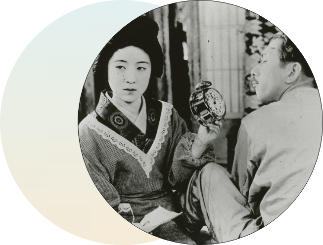
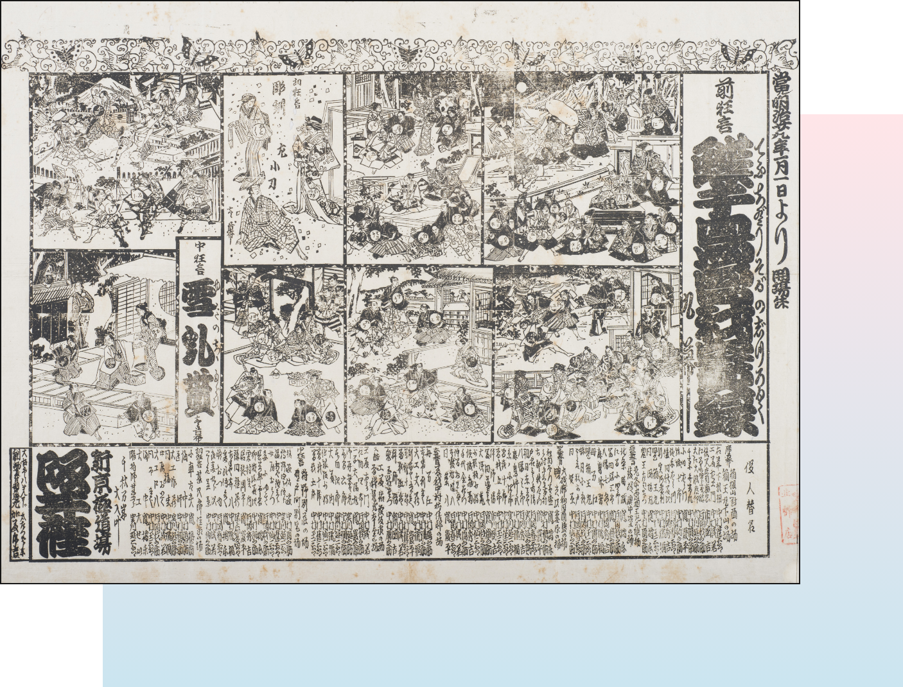
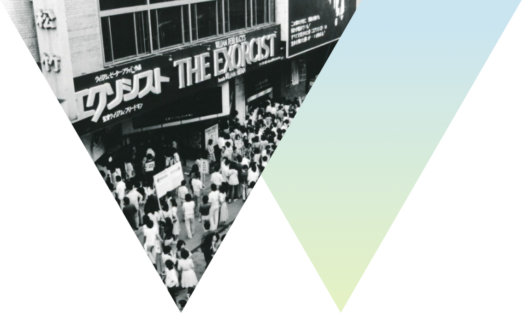
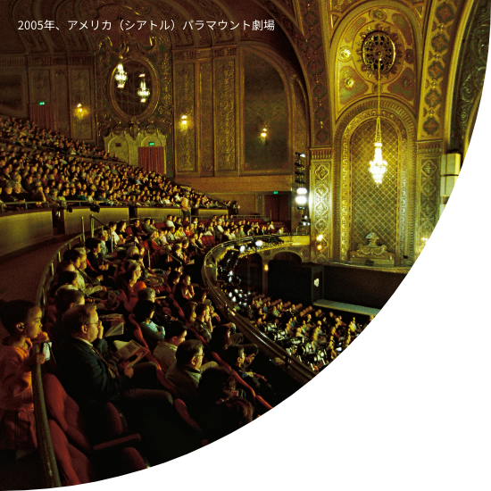
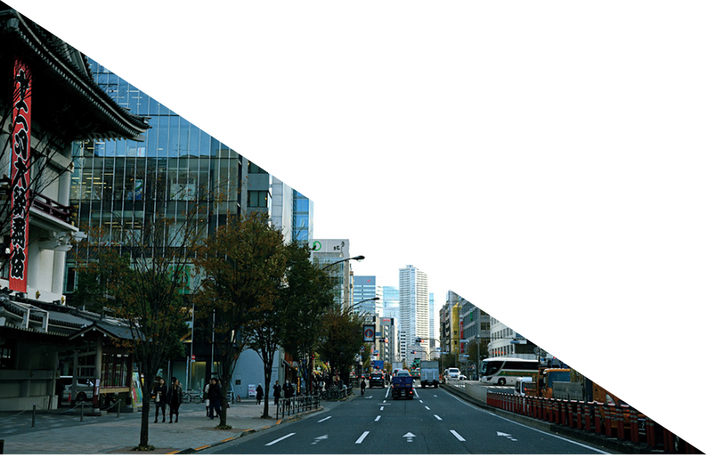
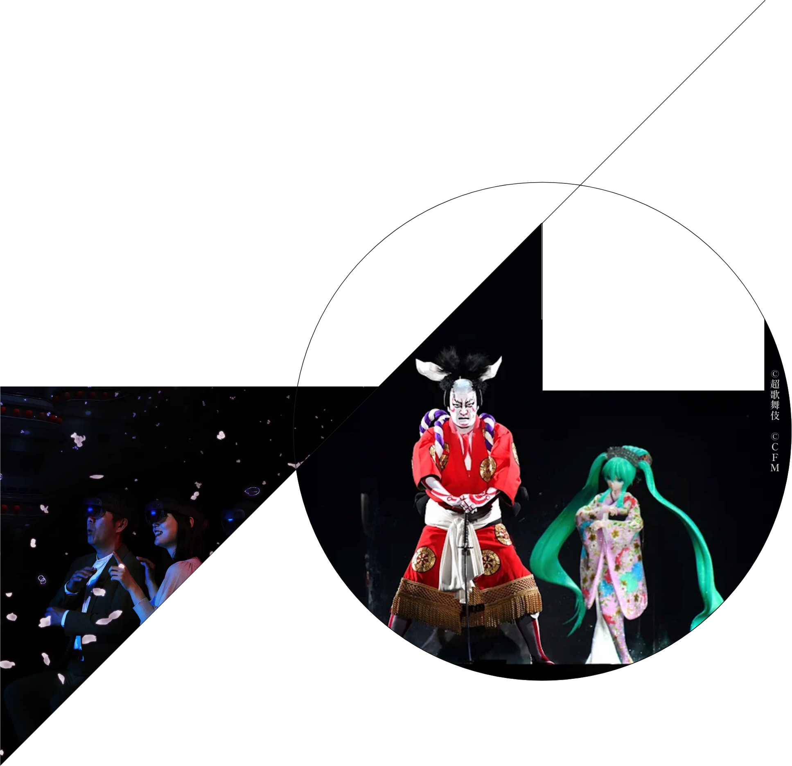

know by keywords
キーワードで知る松竹
1.
130年の
歴史
歌舞伎の興行からビジネスをスタートし、日本の文化とともに成長を続けてきた松竹。映画製作においては、日本初のトーキー映画やカラー映画を手掛け、常にエンターテインメントの先駆者として時代を切り拓いてきました。この歴史の中で培われた知識と経験が、今も当社を支える重要な基盤となっています。
1.
『マダムと女房』（五所平之助監督）
©1931松竹株式会社
日本映画初のトーキー長編劇映画の成功作。

2.
型があっての
型破り
型があっての
型破り
伝統とは、時代を超えて積み重ねた革新の結晶です。守ることだけに固執せず、自由な発想で新しい創造に挑むこと。それこそが、松竹が長きにわたりビジネスを続けることができている理由です。これからも、変わらないものを核としながら、時代の変化に柔軟に挑み続けます。
阪井座の辻番付（明治32年11月）


3.
顧客
主義
松竹のお客様目線は、必要とされる前に行動を起こすことを指します。作品やサービスの提供にとどまらず、顧客や社会のニーズに先回りして応えることで、常に新しい価値を生み出してきました。この精神は、「今日も 期待以上を、ひとつ。」という心構えと共に、いまも松竹に根付いています。

1.
歌舞伎を
世界へ
ユネスコの世界無形文化遺産に登録されている日本の歌舞伎。クールジャパンの代表“KABUKI”として、世界中からも注目されています。新たな演出や技術を取り入れた作品や、人気アニメや漫画を原作とする新作も生み出し続けており、まさに「伝統と革新」が融合したエンターテインメントといえます。日本文化の多様性と豊かさを世界に広めていく取り組みが、今も続いています。
2.
ものづくり、
心づくり
ものづくり、
心づくり
演劇、映画、アニメといった「ものづくり」の分野において、クリエイティブな精神を大切にしています。脚本から映像、舞台演出に至るまで、数多くの関係者と連携しながら、緻密なプロセスを経て作品がつくり上げられています。人々に愛され続ける作品を世に送り出してきた誇りを胸に、これからも自社企画の作品をつくり続けます。特にアニメをはじめとした映像事業においては、グローバルな市場にも積極的に進出しており、新しいマーケットのニーズに応える柔軟なビジネスモデルを構築しています。

3.
街づくりの
文化力
街づくりの
文化力
不動産事業を通じて、地域社会の発展や文化創造を目指しています。劇場や映画館の運営だけでなく、地域に根ざした街づくりにも貢献してきました。エンターテインメントを通じた街の賑わいを創出し、新たな文化やコミュニティの形成を支援する取り組みを続けています。松竹の街づくりは、単に建物を建てるだけでなく、その地域の文化や特性を生かし、人のつながりと心の豊かさを生み出します。
1.
新たな
価値を
創造する
国内外さまざまなジャンルの企業と協働し、新たな事業領域を開拓していきます。事業共創により、今までの松竹の歴史にはなかった、新しい価値提供が可能になりました。次世代のコンテンツ創出や課題解決に取り組むことで、エンターテインメントの無限の可能性を追求していきます。そして、既存の枠組みにとらわれず事業構造の変革を推進し、エンターテインメントを軸として、次の時代を切り拓いていきます。

2.
世界
文化に
貢献する
世界文化に
貢献する
100年先の未来のために、日本文化の発信拠点として、伝統と革新に挑み続けます。テクノロジーは進化していきますが、ものづくりを通して人の心を支える私たちの仕事は変わりません。ずっと先の未来においても、どこかで誰かの人生に寄り添い、長く愛される松竹作品が数多くありますように。時代を超え、国境を超え、世界中のお客様に新たな感動を届けることこそ、松竹が目指す世界貢献です。